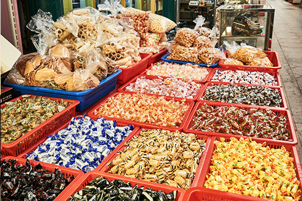

@@include('static/include/layer_header.html',{
"title":"주변 즐길거리"
})

신포국제시장
인천 최초의 근대적 상설시장으로 개항의 역사와 함께 100여년이 넘는 역사를 자랑하는 인천의 대표시장입니다. 개항기에는 외국 문물이 수입되는 창구 역할을, 최근에는 다양한 먹거리와 생필품들을 판매하는 역할을 하고있습니다.
이미지출처 : 인천관광공사 홈페이지
- 이용안내
- 09:00 ~ 21:00
032-764-0407~8, 032-764-0415
- 주소
- 인천광역시 중구 우현로49번길 11-5